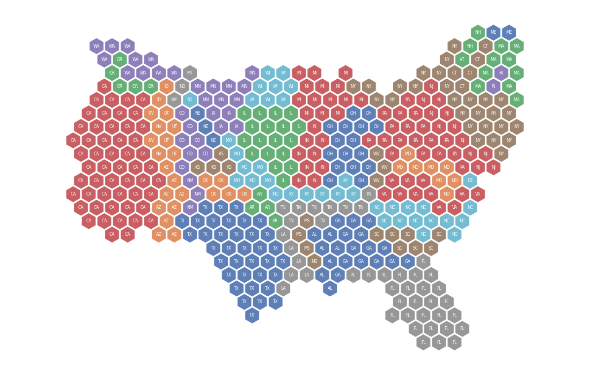
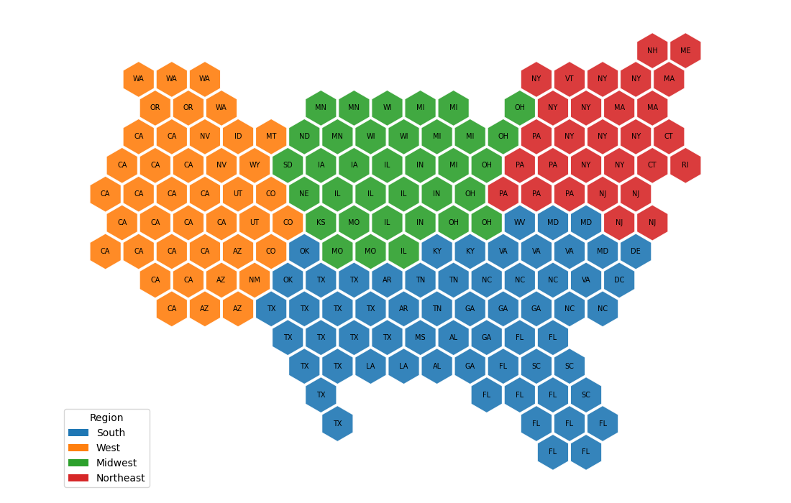

MosaicLayout had no gallery example at all; these two show the basic tilegram and group_by block contiguity.
Two examples under docs/examples/symbol_cartogram/, all on bundled data:
| file | what it teaches | runtime (gallery build) |
|---|---|---|
plot_symbol_mosaic_layout.py | tile_count, the basic tilegram | 1.6 s |
plot_symbol_mosaic_groups.py | group_by, block contiguity | 4.5 s |
No gallery registration was needed: the gallery plugin picks up everything under docs/examples/ and orders it by filename, so the two land next to the other symbol-cartogram examples.
**mosaic_layout.png** — the outline of the country is clearly readable: the West is a wide orange block dominated by California, the Northeast is a dense red cluster, Texas and Florida keep their shapes. Population, not area, drives the block sizes, so Montana, Wyoming and the Dakotas shrink to one hexagon each while California takes about twenty.
**mosaic_groups.png** — 432 districts, one hexagon each, grouped by state. The run reports every region at its exact tile count, no non-contiguous region and no split group. Two things in the picture are worth naming rather than glossing over, and the example's prose names both:
holes (the run leaves ten), with the same number of tiles pulled from just outside the outline instead.
lattice neighbors; the apparent gap is only the drawn spacing. This was checked against the metrics rather than assumed.
morph=False vs morph=True contrast.** Written, rendered and thendropped: the user judged it not helpful enough to carry. The two panels differ in ways that are hard to attribute without already knowing the algorithm, and the morph=False panel raises questions the gallery is the wrong place to answer — Maryland lands among New York and Pennsylvania, losing contact with the four states it borders, which is an open question about the cost function rather than a lesson about the option.
min_one_tile_per_region on world countries.** A genuine capability, but theinput it needs is the one where the layout is roughest, and a world run is much slower than a US one. Poor fit for a first impression of the layout in a CI-built gallery.
present and teaches nothing the hexagon version does not.
group_byoutright, so the two cannot be shown on the same input in one figure.
uv run mkdocs build -s completes after removing docs/generated/: 611 s,exit 0, both examples executed (verified in mg_execution_times.md).
make check clean; 712 tests pass.
group_by: one hexagon per congressional district, each state's districts kept as one connected block

basic tilegram: US states, one hexagon per two million people, colored by census region